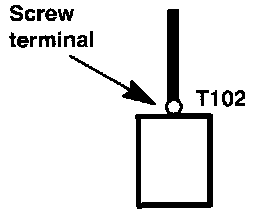

Operation CHARM
: Car repair manuals for everyone.
Home
>>
Acura
>>
1995
>>
Legend Coupe V6-3206cc 3.2L SOHC FI
>>
Repair and Diagnosis
>>
Sensors and Switches
>>
Sensors and Switches - Powertrain Management
>>
Sensors and Switches - Fuel Delivery and Air Induction
>>
Air Flow Meter/Sensor
>>
Diagrams
>>
Diagram Information and Instructions
>>
Symbols
>>
Terminals - "T"
Terminals - "T"
Terminals:

Each "T" terminal (ring type) is numbered for reference and location. A "T" terminal is secured with a screw or bolt.